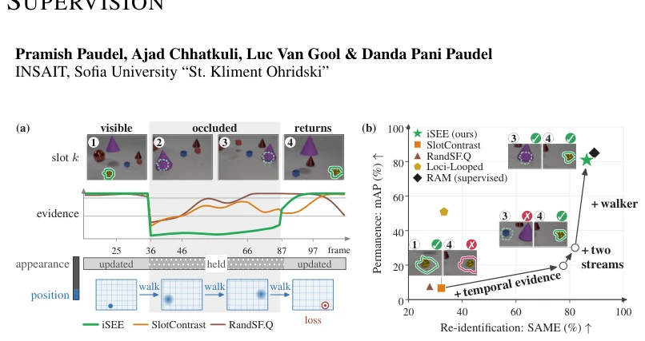
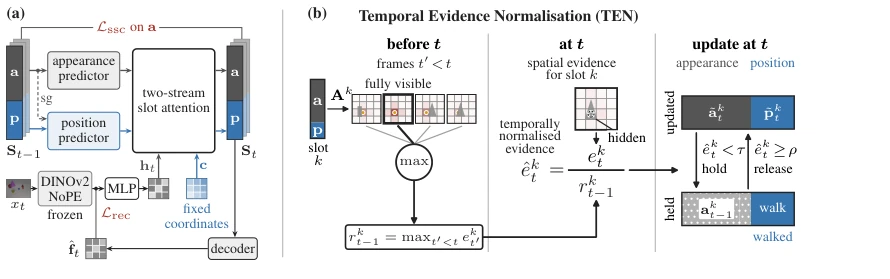
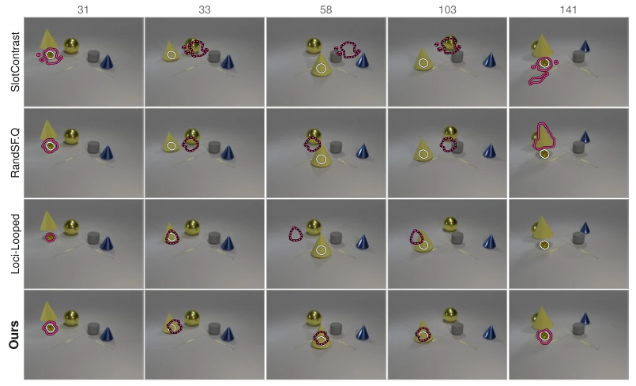
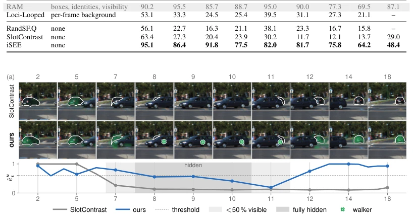

iSEE attempts to equip self-supervised Slot models with "memory" to solve the persistent problem of objects disappearing after occlusion. This is like teaching a child to play hide-and-seek, ensuring toys are not lost. It uses TEN to detect occlusion, separates appearance and position via dual-stream, and trains a "Walker" to track hidden trajectories. The performance on LA-CATER approaches the supervised RAM, which is quite impressive. But there are also many drawbacks: it does not solve the inherent binding problem of Slot models (Slots misidentifying identities), and the fixed number of Slots limits flexibility. Moreover, performance drops when the camera moves, indicating generalization still requires improvement. Overall, it is a clever patch in Slot learning, but not yet at the level of "general intelligence". It proves constancy is feasible without labels, but relies on DINOv2 feature quality. If underlying features are poor, Walker cannot save it. Also, TEN and Walker need to cooperate during inference, increasing computational overhead. However, as a basic representation, it provides clean action signals for subsequent planning.
研究动机Motivation
物体恒常性是视频理解的核心，但自监督 Slot 模型（如 SlotAttention, Locatello et al., 2020）在遮挡下容易丢失目标。SlotContrast (Manasyan et al., 2025) 虽改进了时序一致性，仍无法处理长时遮挡，Slot 会漂移或被遮挡物覆盖。现有方法多依赖标签（如 RAM, Tokmakov et al., 2022 用框和身份标签），或需背景图（Loci-Looped, Traub et al., 2024）。缺乏标签下的恒常性推理极难：需检测遮挡、重识别、保持位置连续。iSEE 旨在无标签下解决此问题，填补自监督与有监督的鸿沟，为具身智能提供鲁棒表征。
Object constancy is core to video understanding, but self-supervised Slot models (e.g., SlotAttention, Locatello et al., 2020) easily lose targets under occlusion. SlotContrast (Manasyan et al., 2025) improves temporal consistency but still cannot handle long-term occlusion; Slots may drift or be covered by occluders. Existing methods mostly rely on labels (e.g., RAM, Tokmakov et al., 2022 use box and identity labels), or require background images (Loci-Looped, Traub et al., 2024). Constancy reasoning without labels is extremely difficult: requires occlusion detection, re-identification, and maintaining position continuity. iSEE aims to solve this problem without labels, bridging the gap between self-supervised and supervised, providing robust representations for embodied AI.
The overall process is divided into three stages: first train Encoder, then train Walker, TEN is parameter-free. Three core innovations: 1. Temporal Evidence Normalization (TEN): compares current Slot attention with historical maximum; if too low, occlusion is judged, appearance update is paused. 2. Appearance-Position Dual-Stream: Slot is split into appearance (a) and position (p) streams. Appearance freezes during occlusion, position stream continues. Position stream reads fixed coordinate Fourier encoding, appearance stream reads DINOv2 features. 3. Walker: tracks hidden positions based on random walk, trained only when objects reappear, no ground truth positions needed. Decoder uses only position stream to generate masks. TEN operates during inference, Walker is trained independently after training. Loss function uses reappearance positions as targets, optimized via Gaussian distribution. Position stream depends on appearance via Stop-Gradient to ensure motion logic. TEN threshold is dynamically adjusted to prevent misjudgment. Walker performs random walk on graph structure, utilizing feature similarity transition probabilities.

Figure 1: iSEE achieves self-supervised object permanence, close to a supervised tracker. (a) Slot k (green) holds the ball; dashed, its mask predicted with iSEE during the occlusion. A slot’s evidence is the attention it receives from the frame’s patches: iSEE’s clearly signals the occlusion and the reappearance. iSEE’s slot is separated into appearance and position; during the occlusion the appearance is held and the position keeps walking, learnt only from where it reappears (red ring). (b) On LA-CATER (static), each arrow adds one of our contributions to the existing baseline, SlotContrast (Manasyan et al., 2025).

Figure 2: (a) The two-stream slot in training. (b) TEN measures a slot’s evidence on frame t against the largest evidence the slot had before t. (a) An appearance predictor and a position predictor advance the two streams a and p of every slot; the position predictor reads a through a stop-gradient (sg). The two-stream slot attention updates a from the appearance grid ht and p from the position grid c (Eq. 3). The decoder places each object from p alone, and Lssc acts on a only (Sec. 3.1). (b) For slot k, ek t is the mean of its largest attention values on frame t (Eq. 4), and ˆek t = ek t /rk t−1 (Eq. 5). The slot switches to held, its appearance kept and its position walked (Sec. 3.2), when ˆek t falls below τ, and back to updated when it rises above ρ (Eq. 6).
Tested on LA-CATER (static/moving camera) and KITTI. Metrics: mAP (constancy localization) and SAME (re-identification). iSEE achieves mAP 80.5 on static LA-CATER, close to RAM (85.0), far exceeding SlotContrast (8.6). Performance drops under moving camera due to weak Encoder discovery capability. Re-identification on KITTI is 48.4%, better than SlotContrast (29.0%). Ablation shows TEN improves re-identification, Dual-stream +NoPE improves mAP, Walker enables hidden tracking. In application, position stream can serve as world model actions, enabling gradient descent planning (MOVi-C).

Figure 4: Object permanence in LA-CATER: a cone is put over the target and carries it across the frame. The target is visible only in the first and last columns. White: its amodal mask. Red: the followed slot, solid for its own mask, dashed where moved onto the predicted position; no red: the slot owns no pixel there. Only iSEE tracks the target while it is hidden.

Figure 5: Occlusions in KITTI: a car passes behind another road user and reappears. Unevenly spaced frames of one tile, cropped to the car and its occluder. White: the car’s visible mask. Green: the slot on the car before the occlusion; cross: the walker’s predicted centre while the car is hidden. Both models’ evidence falls while the car is hidden; only iSEE’s recovers, and its slot returns.